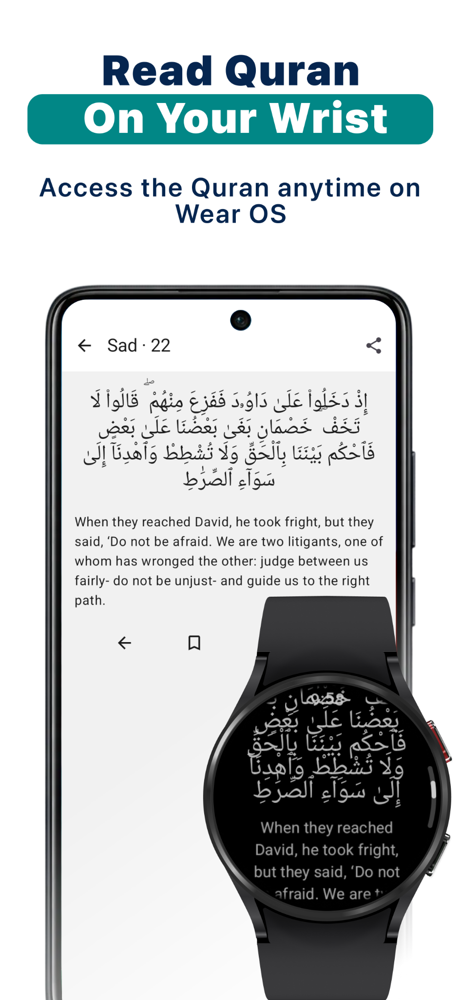
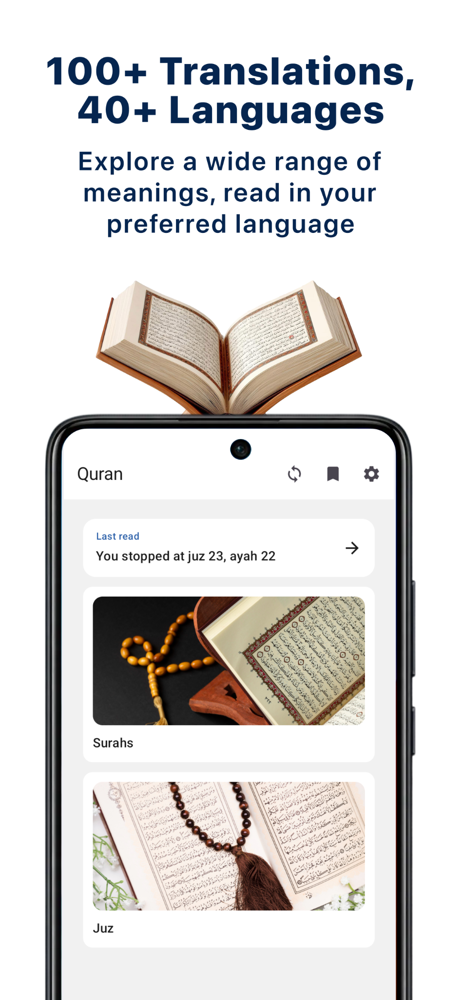
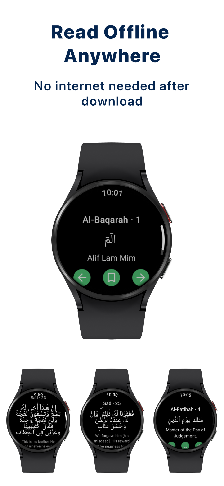

Read from your wrist
Access Quran verses on your Wear OS watch and Android phone.
Quran reader for Wear OS
Quran for Wear OS
Android & Wear OSRead the Quran on your phone and Wear OS watch, explore translations and continue reading offline after downloading.
Read on your wrist, explore translations and keep the Quran close throughout your day.



Access Quran verses on your Wear OS watch and Android phone.
Choose from 100+ translations across 40+ languages to read in your preferred language.
Download before you go and read without an internet connection.
Questions, feedback or a feature you’d love to see? Get in touch.
Contact support ↗